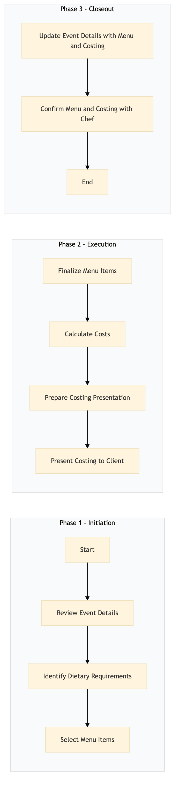

| Role | Steps |
|---|---|
| Banquet Manager | 1.1 1.4 2.4 3.1 |
| Executive Chef | 1.3 2.1 3.2 |
| Cost Controller | 2.2 |
| Step | Name | Role | System | Input | Output | KPI | Dec? | Exc? | Pain Point / Risk |
|---|---|---|---|---|---|---|---|---|---|
| 1.1 | Review Event Details | Banquet Manager | Oracle OPERA Cloud | Event booking details from Oracle OPERA Cloud | Event summary document | Less than 5 minutes per event review | N | Y | Handling last-minute changes in event scope |
| 1.2 | Identify Dietary Requirements | Banquet Manager | Oracle OPERA Cloud | Guest dietary preferences from Oracle OPERA Cloud | Dietary requirements document | Less than 3 minutes per event review | N | Y | Accommodating multiple dietary restrictions |
| 1.3 | Select Menu Items | Executive Chef | Oracle MICROS Simphony | Dietary requirements document | Preliminary menu draft | Less than 20 minutes per menu selection | N | Y | Balancing flavor and cost |
| 1.4 | Review Menu with Client | Banquet Manager | Oracle OPERA Cloud | Preliminary menu draft | Client feedback document | Less than 30 minutes per review session | Y | N | Negotiating changes with clients |
| 2.1 | Finalize Menu Items | Executive Chef | Oracle MICROS Simphony | Client feedback document | Finalized menu document | Less than 30 minutes per finalization | N | Y | Ensuring menu items are available |
| 2.2 | Calculate Costs | Cost Controller | Oracle MICROS Simphony, Birchstreet Procurement | Finalized menu document | Costing report | Less than 45 minutes per costing calculation | N | Y | Accurate ingredient pricing |
| 2.3 | Prepare Costing Presentation | Banquet Manager | Microsoft Power BI | Costing report | Costing presentation document | Less than 15 minutes per presentation preparation | N | Y | Visualizing complex data |
| 2.4 | Present Costing to Client | Banquet Manager | Oracle OPERA Cloud, Microsoft Power BI | Costing presentation document | Client approval document | Less than 30 minutes per presentation session | Y | N | Negotiating budget constraints |
| 3.1 | Update Event Details with Menu and Costing | Banquet Manager | Oracle OPERA Cloud | Client approval document, finalized menu document, costing report | Updated event booking details in Oracle OPERA Cloud | Less than 10 minutes per update | N | Y | Data entry errors |
| 3.2 | Confirm Menu and Costing with Chef | Executive Chef | Oracle MICROS Simphony | Updated event booking details from Oracle OPERA Cloud | Confirmation document | Less than 10 minutes per confirmation | N | Y | Ensuring menu items are ready |
The FB-BQ-04 process involves planning and costing catering menus for banquets and events at a Marriott full-service hotel. This ensures that all food and beverage offerings meet guest expectations while staying within budget.